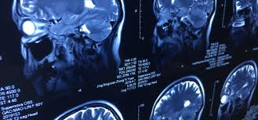

<!DOCTYPE html>
<html lang="en">
<head>
    <meta charset="UTF-8">
    <meta http-equiv="X-UA-Compatible" content="IE=edge">
    <meta name="viewport" content="width=device-width, initial-scale=1.0">
    <title>Radiology</title>
    <link href="C:\Users\129TX\Desktop\python\hms\css\radiology.css" rel="stylesheet" type="text/css">
</head>
<body>
    <style>
    html{
        
        background:url('back.jpg') no-repeat center center fixed;
        background-size: cover;
        -webkit-background-size:cover;
        -moz-background-size:cover;
        -o-background-size:cover;
    }
</style>
</body>
</html>
<section class="paras">
    <div class="radiologyimage">
        

    </div>
    <div class="radio">
        <h1>radiology</h1>
        <ul>
        <li><p>our radiology services is led by highly qualified radiology with dedicated fellowship training from world-leading medical centers.the multidisciplinary team includes radiologists and radiographers and nursing,physics,administration and support staff.</p></li>
            <li> <p>we are actively involved in ongoing clinical research and training to ensure the best possible service is provided to all who access our serivces.the introduction of new technologies and equipment is always done with a patients focus very much to the fore.</p></li>
                <li> <p>we provide a GP services for:</p></li>
            </ul>
    <ol>
      <li><p>general X-rays </p></li>
      <li><p>skull and maxillofacial X-rays</p></li>
      <li><p>fluoroscopy-barium imaging</p></li>
      <li><p> mmography</p></li>
      <li><p>ultrasound</p></li>
      <li><p>chests:mondays,wednesday,friday,8amto4:30pm(walk in services)</p></li>
    </ol>
    </div>
    
</section>